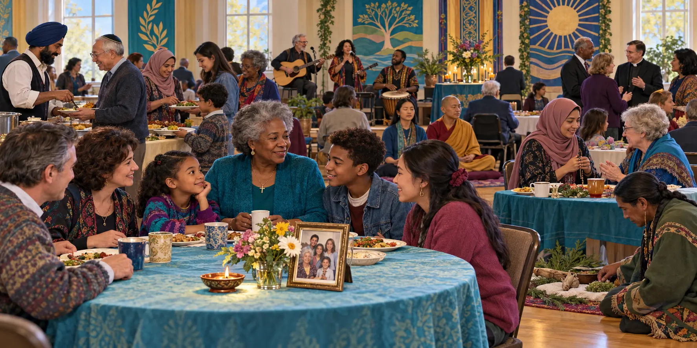
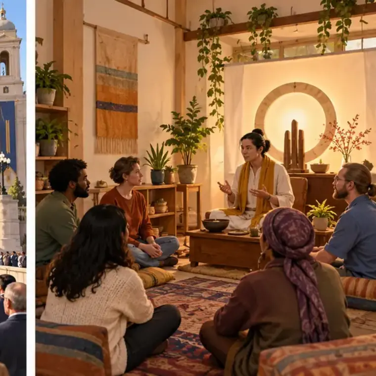

Identify institutions
Explain how family, education, economy, government, religion, healthcare, and media meet social needs and organize behavior.
Eleanor’s descendants discover that a family decision is rarely only personal: schools, workplaces, government, religion, healthcare, and media all enter the room.
Explain how family, education, economy, government, religion, healthcare, and media meet social needs and organize behavior.
Distinguish a broad institution from the schools, hospitals, congregations, agencies, firms, and media organizations operating within it.
Use functionalism, conflict theory, and symbolic interactionism to analyze stability, inequality, and everyday meaning.
Show how a change in technology or policy moves across institutions and produces intended and unintended consequences.
Nearly a century after Eleanor’s birth, her descendants gather in the same Ohio region. Grace, one of Eleanor’s granddaughters, has watched telephones move from shared lines to private household devices. Her daughter works at a hospital; a grandson wonders whether college credentials will improve his chances in a changing labor market; the television carries political news; and rising costs shape what the family can buy. Each person has private feelings, but their choices occur inside organized systems.
Family, church, railroads, local government, and a limited school system organize opportunity.
Large schools, corporations, hospitals, and federal programs reach further into daily life.
Television, telephones, credentials, insurance, and global markets connect private life to distant organizations.
Platforms, algorithms, telemedicine, online education, and remote work reorganize access and surveillance.
A social institution is a durable system of roles, norms, values, and practices organized around a major social need. An organization is a deliberately structured group pursuing goals. Education is an institution; a particular community college is an organization. Healthcare is an institution; a hospital is an organization. Government is an institution; a city council and a federal agency are organizations.
Care, kinship, socialization, emotional support, reproduction, and resource sharing.
Knowledge, skills, credentials, cultural transmission, selection, and social integration.
Production, distribution, labor, consumption, property, and allocation of resources.
Collective decisions, law, public goods, taxation, conflict management, and legitimate authority.
Meaning, sacred beliefs, ritual, moral community, comfort, solidarity, and sometimes social change.
Defines, prevents, and treats illness; organizes expertise; distributes care and health resources.
Information, entertainment, socialization, agenda setting, representation, and public connection.
The chart supplied for the conclusion becomes more useful here as an interactive systems map. Select a change and trace how it travels across institutions.
| Starting institution | Immediate change | Likely connections | Question to investigate |
|---|---|---|---|
| Education | School closure | Family schedules → transportation → local business → housing demand | Who gains efficiency, and who loses access? |
| Healthcare | Hospital expansion | Employment → training → housing costs → government revenue | Do new services and jobs reach existing residents? |
| Economy | Employer exit | Income → family stress → tax base → schools and health | Which groups can relocate or retrain? |
| Media and technology | Broadband access | Education → work → healthcare → politics and social ties | Who has devices, skills, privacy, and meaningful access? |
Max Weber described bureaucracy as organization through specialization, hierarchy, written rules, technical competence, and impersonal procedures. Bureaucracy can coordinate thousands of people consistently. It can also produce goal displacement, when following procedure becomes more important than the original purpose; red tape, when rules obstruct action; and depersonalization, when a person becomes a case number.
Each position performs a limited task. Expertise and speed increase, but no one worker may see the person’s entire problem.
Authority flows through ranked offices. Responsibility is identifiable, yet information and appeals must travel upward.
Documented procedures make similar cases more consistent and create an organizational memory. Rules can also outlive their purpose.
Hiring and promotion ideally depend on training and demonstrated skill rather than kinship or personal favor.
Decisions follow categories rather than personal relationships. This can protect fairness while making a person feel invisible.
Workers occupy offices with defined duties, salaries, evaluation, promotion pathways, and replaceability beyond any one personality.
A patient reaches the correct department quickly because specialists, records, and rules coordinate the visit. Then a missing code prevents treatment even though every employee understands the need. Identify the bureaucracy’s manifest benefit, the point where red tape appears, and the moment when completing the form displaces the institution’s original goal. Finally, name one safeguard that preserves consistency without treating the patient as a number.
Select an example to reveal the distinction.
| Perspective | Central question | Institutional explanation | Eleanor-family application |
|---|---|---|---|
| Structural functionalism | What needs does this institution meet, and how does it connect to other parts? | Institutions contribute to continuity through manifest and latent functions; dysfunctions can disrupt the system. | A school teaches reading (manifest), forms friendships (latent), and may reproduce harmful tracking (dysfunction). |
| Conflict theory | Who controls resources, and who benefits or bears the costs? | Institutions can protect unequal ownership, authority, prestige, and access while presenting arrangements as normal. | Grace notices that insurance, neighborhood funding, and occupational credentials distribute opportunity unevenly. |
| Symbolic interactionism | How do people create institutional reality in everyday encounters? | Roles, labels, uniforms, rituals, documents, and repeated interactions create meanings and expectations. | A white coat signals expertise, a diploma signals competence, and a wedding ring signals a recognized relationship. |
Scenario: County General adopts a computer system that shortens record searches but increases employee monitoring.
Story connection: The theories are not competing guesses in which only one can be true. Grace can see efficiency, unequal control, and changing meanings in the same computer system.
Families organize kinship, caregiving, socialization, intimacy, economic cooperation, and intergenerational support. The exact form is culturally variable: societies differ in marriage rules, residence, descent, household composition, inheritance, and expectations of children and elders. A sociologist does not treat one family arrangement as the universal standard.
Functionalists examine care and continuity; conflict and feminist theories ask how unpaid labor, property, age, and gender distribute power; interactionists study how people negotiate identities such as parent, child, spouse, or chosen family. Families can protect members and also reproduce inequality or conflict.
Teaching literacy, mathematics, civic knowledge, occupational skills, and credentials.
Friendship, supervision of young people, matchmaking, networks, and shared routines.
Unstated lessons about punctuality, competition, obedience, authority, gender, and whose knowledge counts.
Credentials and course placement can open routes or limit options, sometimes reflecting prior inequality.
The economy organizes production, distribution, and consumption. Labels such as capitalism, socialism, communism, and traditional economy are best treated as ideal types: simplified models that make comparison possible. They are maps, not complete portraits. No large contemporary economy fits one model perfectly. Most combine private firms, public services, taxes, regulation, government purchasing, household labor, nonprofit organizations, and sometimes cooperative ownership.
Ideal type: private ownership and market exchange coordinate production.
Modern complication: firms depend on law, currency, infrastructure, subsidies, public research, and regulation.
Ideal type: major resources are owned or directed collectively for social provision.
Modern complication: public systems often operate beside private markets rather than replacing them.
Ideal type: a classless society with common ownership; historical states instead developed centralized parties and planning.
Modern complication: states commonly combine planning, markets, and private enterprise in changing proportions.
Ideal type: custom, kinship, and inherited practices guide work and exchange.
Modern complication: customary exchange can coexist with mobile banking, wage labor, tourism, and global trade.
This delay is cultural lag: material culture—tools, platforms, machines, and technical capacity—can change faster than nonmaterial culture such as laws, workplace norms, ethics, and social protections. Governments must investigate a new practice, debate competing interests, write rules, build enforcement capacity, and survive legal challenges. By then, the technology may have changed again.
Speeds records and billing; rules focus on a workplace and an identifiable employer.
Work, customers, and data cross borders while responsibility becomes harder to locate.
Software assigns work, measures performance, recommends prices, and can reproduce hidden bias.
Workers, consumers, firms, governments, and communities may value efficiency, dignity, privacy, safety, and fairness differently.
Choose a technology. Separate the innovation from the institutional questions that arrive later.
Most production centered on land, households, craft work, agriculture, and local exchange. Work and family life often occupied the same place, although status and property remained unequal.
Factories concentrated workers, machinery, clocks, owners, and supervisors. A detailed division of labor increased output while making many workers dependent on wages and distant decisions.
Service, information, healthcare, education, finance, and technology employment expanded. Knowledge and credentials gained value while stable manufacturing jobs declined in many communities.
Supply chains, contractors, remote teams, apps, and algorithms distribute work across organizations and nations. Flexibility may grow, but responsibility for benefits, safety, data, and risk can become unclear.
Work supplies income, but it also creates identity, routines, relationships, status, skill, and a connection to the larger division of labor. Durkheim argued that increasing specialization can create organic solidarity because people become interdependent. Marx emphasized alienation: workers may become separated from control over the product, the process, one another, and their own creative capacities. Both processes can occur in the same workplace.
Democracy, republic, constitutional monarchy, oligarchy, autocracy, and theocracy do not describe the same dimension. A country can be both a democracy and a republic; a constitutional monarchy can also be democratic; and oligarchic influence can exist inside a formally democratic system. Instead of forcing every society into one box, compare five questions.
Open the complete institutions, economy, and political-systems appendix
Women have always worked, including unpaid household labor, farm labor, family businesses, domestic service, factories, and paid professional work. What changed sharply in the second half of the twentieth century was the proportion of women counted in the formal labor force and the range of occupations socially and legally open to them. Women’s labor-force participation increased dramatically through the 1960s, 1970s, and 1980s.
Inflation, housing, healthcare, education, and other household costs made a second income important or necessary for many families. Loss of stable industrial wages also changed household strategies.
Expanded education, civil-rights protections, changing occupational rules, and challenges to gender discrimination opened more paid roles—unevenly across race and class.
Smaller families, changing marriage patterns, contraception, household technology, and childcare arrangements altered when and how women could enter paid work.
Employment can supply income, skill, networks, status, security, and fulfillment. Women did not enter work only because families “failed”; many claimed opportunities previously denied.
The double shift: paid employment did not automatically redistribute cooking, cleaning, caregiving, and emotional labor. When women added paid work while retaining most unpaid work, institutional change in the economy outpaced change inside the household. Class shapes the solution: affluent households may purchase care or convenience, while lower-income families may rely on relatives, opposite shifts, informal care, or difficult compromises.
Government makes and enforces collective rules, provides public goods, taxes, distributes resources, and claims legitimate authority. Policy translates research and political struggle into institutional action. A school funding formula, licensing rule, insurance program, or workplace law can change life chances far beyond the people who wrote it.

Sociologists study what religion does socially, not whether a faith claim is true. Émile Durkheim distinguished the sacred—set apart and treated with awe, reverence, protection, or restriction—from the profane, the ordinary activities and objects of everyday life. Profane does not mean wicked, immoral, or anti-religious. A loaf of bread, cup, building, day, text, song, place, or gesture can move from ordinary to sacred when a moral community sets it apart and treats it collectively as special. Shared rituals can produce collective effervescence, a powerful sense of unity, and strengthen social solidarity.
Set apart through shared meaning, reverence, prohibition, or ritual. The sacred may include gods, ancestors, nations, flags, places, memories, texts, objects, or principles.
The routine realm of ordinary work, objects, time, and activity. It is not automatically disrespectful or evil; it is simply not set apart in that social setting.
Repeated, symbolically meaningful action that connects people to the sacred and to one another—even when participants interpret the experience differently.
Trust or commitment concerning realities and meanings that may extend beyond empirical demonstration. Faith can motivate care, sacrifice, identity, solidarity, or conflict.

A building is ordinary construction until a community dedicates it. Fabric becomes a national or religious symbol. A meal becomes a sacrament, holiday ritual, or memorial. Choose one object and explain who defines it as sacred, which ritual marks the change, what norm protects it, and how an outsider might interpret it differently.
Symbols vary within every tradition. A symbol may have several interpretations, and no symbol represents every member. The crescent and star, for example, is widely associated with Muslim communities but is not a universal Islamic requirement. Many Indigenous religions are distinct traditions and do not share one universal symbol.
The cross recalls the life, crucifixion, and resurrection of Jesus.
The Star of David is a widely recognized symbol of Jewish identity and community.
The crescent and star became a common cultural emblem, though Muslim practice is not defined by one required symbol.
Om represents sacred sound and ultimate reality across many Hindu traditions.
The Dharma wheel represents the Buddha’s teaching and the path toward awakening.
The Khanda joins weapons and a circle to represent divine unity, responsibility, and the balance of spiritual and civic life.
Yin and yang show complementary forces whose relationship produces balance and change.
The raised hand commonly represents ahimsa, or nonviolence, and the responsibility to stop harm.
A nine-pointed star commonly represents unity, completeness, and the oneness of humanity.
A torii gate marks movement into a sacred space associated with kami.
Fire represents light, truth, purity, and the presence of divine wisdom; it is not worshipped as a god.
There is no single universal symbol. Land, ancestors, community, and particular sacred beings or places carry tradition-specific meaning.
Religion offers meaning, comfort, moral guidance, ritual, community, identity, and solidarity.
Religion may legitimize inequality or authority, but religious organizations can also mobilize resistance and reform.
People create shared meaning through symbols, testimony, clothing, music, gestures, rituals, and congregational roles.
Marx argued that religion can comfort oppressed people while directing attention away from material inequality. Weber demonstrated the opposite possibility: religious ideas may help produce social change. His analysis of the Protestant ethic linked disciplined work, calling, and accumulation to the development of capitalism. Both arguments can be investigated rather than treated as slogans.
A sociological typology distinguishes an ecclesia, closely connected with a state or broad population; a denomination, one established religious organization among several; a sect, a smaller group often formed in protest against an established tradition; and a new religious movement, a newer organized faith or spiritual community. These are analytical categories, not rankings of truth or worth. Groups can change type as they grow, gain legitimacy, divide, or adapt.
An established religious organization whose members participate within a religiously plural society. Membership is ordinarily voluntary, and other traditions remain socially recognized.
A religious organization closely integrated with the state, citizenship, or the broader population. Political and religious authority may reinforce one another.

Older typologies often used the word cult for a newer or less socially established religious community. Because that label is now often used as an insult, sociologists commonly prefer new religious movement. Newness, unfamiliarity, or minority status does not by itself demonstrate deception, coercion, abuse, or danger.
Occult literally refers to what is hidden or concealed. Occult traditions may include esoteric teachings, ritual systems, magic, divination, secret knowledge, or accounts of spiritual beings arranged in ranks. Some traditions describe hierarchies of angels, demons, spirits, initiates, or hidden authorities. Sociology can study those beliefs, symbols, organizations, and consequences while remaining neutral about whether the supernatural beings independently exist.
Claims that a fixed group—sometimes described online as “13 families”—controls the world through contracts with demons are not established by reliable historical or legal evidence. Such narratives combine older occult motifs with real modern anxieties about concentrated wealth, inherited advantage, secrecy, corruption, and elite networks. Blackmail, extortion, bribery, exploitation, and abuse are real offenses that can be documented in particular cases. Evidence of one offense, however, does not prove a supernatural hierarchy or collective guilt by ancestry, religion, wealth, or family name.
When inequality is severe and institutions seem unreachable, a hidden all-powerful cause can make a confusing system feel understandable. The story gives visible intention to structures that otherwise seem impersonal.
After a disturbing act or revelation, people reinterpret a person’s earlier life as evidence that the person was always corrupt, dangerous, or supernaturally aligned.
A label becomes a prediction: people expect future evil or deception and interpret ambiguous behavior as confirmation. This can produce stigma, accusation, and self-sealing reasoning.
Separate documented conduct, an interpretation of motive, a sincere sacred belief, and a supernatural claim. Each is a different statement requiring a different form of evidence.
This activity does not identify or rank anyone’s religion. Choose the statement closest to your view and examine the sociological connection.
Eleanor-family caption: Grace remembers that church gave older relatives comfort, mutual aid, music, and identity. She also sees congregations debating gender roles, poverty, war, and civil rights. The same institution can support order and become a base for change.
Health includes interacting physical, mental, emotional, social, spiritual, and environmental dimensions. These dimensions are not separate boxes. Unsafe work can create physical injury and emotional stress; unreliable transportation can interrupt treatment; discrimination can affect trust and chronic stress; supportive relationships can improve coping and recovery.
Medicine is a society’s organized way of defining and responding to illness and injury. The sick role, associated with Talcott Parsons, grants a legitimately ill person temporary exemption from usual duties while expecting them to seek competent help and try to recover. The model reveals social expectations but fits chronic illness, disability, unequal access, and contested diagnoses imperfectly.
Epidemiology examines the distribution and causes of health conditions in populations. Morbidity refers to illness or impairment; mortality refers to death. Patterns across neighborhoods, occupations, racialized groups, genders, ages, and social classes help researchers see that disease is never only a collection of private biological events.
Social determinants of health are the conditions in which people are born, grow, learn, work, live, and age. Income, education, housing, food, transportation, environmental exposure, discrimination, social support, insurance, and healthcare availability influence both risk and recovery. They do not mechanically determine an individual outcome, but they distribute opportunities for health unevenly.
Training, licensing, specialized knowledge, ethical codes, and occupational control establish medical authority.
Human conditions or behaviors become defined and treated as medical problems. This may provide help while expanding professional control.
Efficiency pressures can reduce a whole person to a chart, diagnosis, billing code, or timed appointment.
Income, race, gender, neighborhood, work, insurance, environment, stigma, and policy shape exposure and access.
Medical institutions have produced extraordinary benefits and serious harms. Because clinicians, researchers, companies, and governments control specialized knowledge and access to treatment, their decisions carry institutional power. Ethical safeguards translate four principles into practice:
The U.S. Public Health Service study began in 1932 with 600 Black men in Alabama—399 with syphilis and 201 without it. Researchers did not infect the men, but they did mislead participants, fail to obtain informed consent, and withhold effective treatment after penicillin became the standard therapy in the 1940s.
Eleanor-era connection: while Eleanor’s family was learning to trust modern medicine, Black families had strong evidence that government and professional authority did not protect everyone equally. The study continued until 1972, damaging health and institutional trust across generations.
Sociological lesson: racism, poverty, unequal authority, and control of information allowed an institution to redefine exploitation as research.
In the late 1950s and early 1960s, thalidomide was sold in many countries as a sedative and treatment for nausea in pregnancy before fetal safety was adequately understood. Thousands of children were born with severe limb and other organ differences.
FDA reviewer Frances Oldham Kelsey resisted pressure to approve the drug in the United States because the application lacked adequate safety evidence. Her decision illustrates why independent regulators, transparent data, adverse-event reporting, and testing across pregnancy and other vulnerable conditions matter.
Technology-and-society lesson: pharmaceutical innovation moved faster than safety knowledge. Regulation helped close that cultural lag.
A stereotype becomes medically consequential when it enters a formula, changes whose pain is believed, narrows a clinician’s differential diagnosis, or alters which options are offered. Anchoring bias means holding too tightly to an early explanation. Diagnostic overshadowing occurs when a label—such as “drug seeking,” anxious, disabled, or mentally ill—obscures a new physical condition. A proxy variable stands in for something difficult to measure; when race is used as a proxy for biology or risk, an observed association can conceal structural causes such as access, accumulated discrimination, quality of care, environment, and resources.
An older, widely used calculator for vaginal birth after cesarean—VBAC—included Black or Hispanic identity as a factor that lowered the predicted likelihood of success. A lower score could discourage a trial of labor and make repeat cesarean delivery seem inevitable.
Race is a social category, not a biological mechanism that causes a birth outcome. The revised calculator removed race and ethnicity. The case demonstrates confounding: unequal outcomes may reflect access, continuity and quality of care, hospital practices, stress, resources, and racism rather than an innate racial difference. Social class matters, but it is not the only structural cause.
Practice question: Does the tool measure the patient—or reproduce the history of the system that produced its data?
This scene is not presented as one named patient. It combines a pattern documented in published research: women’s pain has often been taken less seriously, interpreted as emotional, or treated less aggressively than comparable pain reported by men.
A clinician who assumes that a middle-aged woman wants drugs—or decides too quickly that abdominal pain is reflux—may stop gathering evidence. Serious disease can then be missed or diagnosed later. The corrective is not automatic imaging or automatic opioid prescribing; it is a structured differential diagnosis, attention to red flags, appropriate tests, documentation, reassessment, and respectful listening.
Sociological lesson: a cultural stereotype can become an institutional outcome through ordinary decisions, even when no individual announces discriminatory intent.
Name the first impression and ask what evidence could disconfirm it.
Use clinically relevant variables and race-neutral tools rather than treating social categories as biological causes.
Record pain, function, history, red flags, and the patient’s own account consistently.
If symptoms persist or worsen, reopen the differential and escalate care instead of defending the first label.
Can reduce travel and connect patients to specialists, yet depends on broadband, devices, privacy, digital skills, language access, and rules that permit remote care.
Can coordinate information and reduce duplication while introducing surveillance, data-security, billing, and depersonalization concerns.
Can help detect patterns, but results reflect training data and design choices. Biased data can reproduce unequal diagnosis or treatment.
Can support prevention and personalized care while raising questions about consent, interpretation, ownership, insurance, and employer access.
Select a condition outside the examination room. Which institutions enter the patient’s health story?
This question joins sociology, ethics, economics, and political power. The World Health Organization defines universal health coverage as access to needed quality services without financial hardship. That does not require every service to cost nothing, every provider to work for government, or every country to use the same system. It does require a dependable social guarantee that illness will not make necessary care unreachable.
Health is necessary for education, employment, family care, political participation, and human dignity. Because illness is not distributed or chosen fairly, society should guarantee medically necessary care according to need.
Competition and consumer choice may encourage innovation and responsiveness. Critics of a universal guarantee worry about taxes, government control, rationing, bureaucracy, or reduced choice.
Every system allocates scarce time, labor, medicine, and technology. The issue is not whether care is rationed, but how: by price, insurance status, waiting time, geography, clinical priority, political rules, or some combination.
The comparison below describes broad national arrangements, not every benefit or exception. A green marker means residents have a national guarantee in that category; gold identifies a partial guarantee, notable charge, or important access limitation. The Asian cases are especially useful: China, Japan, and South Korea pursue broad or universal coverage through different mixtures of public insurance, regulated private delivery, employment contributions, and patient cost-sharing.
| Country or system | Universal resident coverage | Coverage independent of a particular job | Hospital and physician care protected | Important limits and costs |
|---|---|---|---|---|
| United States Patchwork public–private system | No national guarantee | Partial Medicare, Medicaid, VA, and Marketplace coverage are not tied to one current employer; many others rely on employment. | Eligibility based Emergency departments must stabilize qualifying emergencies, but this is not universal comprehensive coverage. | Premiums, deductibles, copayments, networks, coverage transitions, medical debt, and uninsured gaps can limit access. |
| France Statutory health insurance | Yes | Yes | Universal benefit package | Cost-sharing exists; many residents use complementary insurance to reduce out-of-pocket costs. |
| England National Health Service | Yes for ordinary residents | Yes | Based on clinical need | Most NHS care is free at the point of use, but waiting times, workforce shortages, dentistry, social care, and some prescription charges create gaps. |
| Sweden Tax-funded regional system | Yes | Yes | Publicly financed | Patient fees and waiting times exist, with protections and caps; counties organize delivery. |
| Denmark Tax-funded national system | Yes | Yes | Largely free at use | Prescription medicines, adult dental care, and some services involve cost-sharing; coordination can be fragmented. |
| Norway Tax-funded national system | Yes | Yes | Broad benefit package | User fees apply to some outpatient services, with an annual protection ceiling; geography affects access. |
| Finland Well-being service counties | Comprehensive resident coverage | Yes | Publicly organized | Fees, distance, and waiting times can produce unmet need; employed people may obtain faster ambulatory access through occupational healthcare. |
| Russian Federation Mandatory health insurance and public facilities | Formal universal entitlement | Yes in law | Guaranteed in the public system | Availability and quality vary substantially by region, so a formal right does not always produce equal practical access. |
| China Universal basic insurance goal with multiple public schemes | Near-universal basic enrollment | Basic protection extends beyond one employer | Broad basic coverage | Benefits, reimbursement, provider quality, and access differ by insurance scheme, location, and urban–rural residence; households can still face meaningful out-of-pocket costs. |
| Japan Universal public health insurance | Yes | Continuous through employment or community plans | Comprehensive core services | Patients generally share costs, commonly through coinsurance, with income- and age-related protections and limits. Population aging places pressure on financing and the workforce. |
| South Korea Single national health insurance system | Yes | National coverage | Core services covered | Provider choice and access are broad, but patient cost-sharing is comparatively high and public financial coverage is less complete than in Japan or many European systems. |
Members of Congress do not receive care at a literal price of zero. They must purchase coverage through the DC Health Link small-business marketplace to receive a federal employer contribution, and they may still owe a share of premiums and other cost-sharing. But the federal “employer” contribution comes from public funds. In other words, taxpayers help purchase reliable health coverage for the lawmakers who decide whether taxpayers themselves will receive a universal guarantee.
The inequality is therefore real even when stated accurately: elected officials have stable, publicly subsidized coverage and substantially greater income and institutional power than many constituents deciding whether they can afford a premium, deductible, prescription, or missed day of work. Some lawmakers are wealthy; not every politician is a millionaire. The conflict-theory question is whether decision-makers who are protected from much of the medical insecurity experienced by ordinary households have the same urgency or incentives to redesign the system.
Another hidden subsidy: the United States also subsidizes employer-sponsored coverage outside Congress through tax policy, because qualifying employer contributions are generally excluded from workers’ taxable income. Public policy already helps finance healthcare; the political dispute concerns who receives that help, through which institution, and with what guarantees.
Choose a starting principle. Then test it against the tradeoff rather than stopping at a slogan.

Mass media socialize audiences, circulate culture, define public problems, provide entertainment, and connect institutions. Gatekeeping selects what becomes visible. Agenda setting influences which issues people consider important. Framing emphasizes certain causes, actors, or solutions. Ownership, advertising, government regulation, professional routines, and algorithms shape all three.
Choose a change and trace its institutional ripple.
Tracy Chapman’s 1988 “Fast Car” turns an intimate story into a sociological one. Transportation symbolizes escape and mobility, yet low wages, care responsibilities, addiction, housing, and unequal opportunity constrain choice. The narrator has agency, but agency operates inside institutions.
Which institutions fail to provide stability, care, work, or a reliable route into adulthood?
How do class, labor, and unequal resources narrow the narrator’s realistic options?
What meanings attach to the car, the city, work, partnership, and “being someone”?
Eleanor-family caption: Grace hears the song on cassette and recognizes an old promise in new technology: movement might create freedom. Eleanor once read that promise into the railroad; later descendants placed it in automobiles. Sociology asks who can actually travel toward opportunity.
“The Message” helped establish social realism as a major possibility in recorded rap. Its urban observations connect housing, unemployment, deteriorating infrastructure, policing, stress, family life, and constrained mobility. Instead of reducing hardship to personal character, the song invites the sociological imagination: how do institutions accumulate inside one person’s daily environment?
Identify references to economy, housing, education, family, government, health, media, and criminal justice.
Who controls investment and political attention, and which communities carry disinvestment?
How does the narrator resist explanations that label residents as the problem while ignoring their environment?
Institutions in My Ideal Society
Select at least three institutions. Explain each institution’s purpose, one organization that carries it out, and how the institutions interact.
Use one functionalist concept, one conflict concept, and one interactionist concept. Define each before applying it.
Identify one possible dysfunction or power imbalance and propose accountability, access, or ethical protections.
social institution · formal organization · bureaucracy · hierarchy · specialization · impersonality · red tape · goal displacement · depersonalization · iron law of oligarchy · interdependence
structural functionalism · manifest function · latent function · dysfunction · conflict theory · power elite · symbolic interactionism · roles · statuses · social order · ideal type · cultural lag
kinship · socialization · hidden curriculum · credentialism · gatekeeping · tracking · capitalism · socialism · communism · mixed economy · division of labor · organic solidarity · alienation · globalization · informal economy · labor union · legitimate authority · democracy · republic · constitutional monarchy · oligarchy · autocracy · theocracy · public policy
sacred · profane · faith · ritual · cosmology · moral community · collective effervescence · social solidarity · ecclesia · denomination · sect · new religious movement · secularization · pluralism · civil religion · Protestant ethic · sick role · professionalization · medicalization · epidemiology · morbidity · mortality · social determinants of health · stigma · health inequality · autonomy · beneficence · nonmaleficence · justice · informed consent · institutional power · implicit bias · anchoring bias · diagnostic overshadowing · proxy variable · confounding · gatekeeping · agenda setting · framing · digital divide
Chapman, T. (1988). Fast car [Song]. On Tracy Chapman. Elektra Records.
American College of Obstetricians and Gynecologists. (2021). Counseling regarding approach to delivery after cesarean and the use of a vaginal birth after cesarean calculator. https://www.acog.org/clinical/clinical-guidance/practice-advisory/articles/2021/12/counseling-regarding-approach-to-delivery-after-cesarean-and-the-use-of-a-vaginal-birth-after-cesarean-calculator
Centers for Disease Control and Prevention. (2024). The U.S. Public Health Service untreated syphilis study at Tuskegee timeline. https://www.cdc.gov/tuskegee/about/timeline.html
Chen, E. H., Shofer, F. S., Dean, A. J., Hollander, J. E., Baxt, W. G., Robey, J. L., Sease, K. L., & Mills, A. M. (2008). Gender disparity in analgesic treatment of emergency department patients with acute abdominal pain. Academic Emergency Medicine, 15(5), 414–418.
Durkheim, E. (1995). The elementary forms of religious life (K. E. Fields, Trans.). Free Press. (Original work published 1912)
Hodgson, C. (2026a). M4 lecture notes: Chapters 10, 7, 9, 14, and 19 [Course slides].
Hodgson, C. (2026b). M5 lecture notes: Chapters 18, 20, 21, and 22 [Course slides].
Hoffmann, D. E., & Tarzian, A. J. (2001). The girl who cried pain: A bias against women in the treatment of pain. Journal of Law, Medicine & Ethics, 29(1), 13–27. https://doi.org/10.1111/j.1748-720X.2001.tb00037.x
Michels, R. (1962). Political parties: A sociological study of the oligarchical tendencies of modern democracy. Free Press. (Original work published 1911)
National Institutes of Health. (n.d.). Research for all. https://www.nih.gov/about-nih/impact-nih-research/revolutionizing-science/research-all
Ogburn, W. F. (1922). Social change with respect to culture and original nature. B. W. Huebsch.
OpenStax. (2021). Introduction to sociology 3e. Rice University. https://openstax.org/details/books/introduction-sociology-3e
Office of Personnel Management. (n.d.). How will members of Congress and designated staff obtain health coverage? https://www.opm.gov/frequently-asked-questions/insure-faq/health/how-will-members-of-congress-and-designated-staff-obtain-health-coverage/
Office of Personnel Management. (n.d.). Will members of Congress and designated congressional staff receive a government contribution for their health insurance? https://www.opm.gov/frequently-asked-questions/insure-faq/health/will-members-of-congress-and-designated-congressional-staff-receive-a-government-contribution-for-their-health-insurance/
U.S. Food and Drug Administration. (2023). Frances Oldham Kelsey: Medical reviewer famous for averting a public health tragedy. https://www.fda.gov/about-fda/fda-history-exhibits/frances-oldham-kelsey-medical-reviewer-famous-averting-public-health-tragedy
Organisation for Economic Co-operation and Development. (2025). Health at a glance 2025: Japan. https://www.oecd.org/en/publications/health-at-a-glance-2025_15a55280-en/japan_319bfc39-en.html
Organisation for Economic Co-operation and Development. (2025). Health at a glance 2025: Korea. https://www.oecd.org/en/publications/health-at-a-glance-2025_15a55280-en/korea_40b1d2b4-en.html
World Health Organization. (n.d.). Health financing in China. https://www.who.int/china/health-topics/health-financing
World Health Organization, European Observatory on Health Systems and Policies. (2022–2024). Health system summaries and country profiles: Denmark, Finland, France, Norway, Russian Federation, Sweden, and the United Kingdom. https://eurohealthobservatory.who.int/
Bureau of Labor Statistics. (2017). Women in the workforce before, during, and after the Great Recession. U.S. Department of Labor. https://www.bls.gov/spotlight/2017/women-in-the-workforce-before-during-and-after-the-great-recession/
Grandmaster Flash and the Furious Five. (1982). The message [Song]. Sugar Hill Records.
Parsons, T. (1951). The social system. Free Press.
Weber, M. (1946). Bureaucracy. In H. H. Gerth & C. W. Mills (Eds. & Trans.), From Max Weber: Essays in sociology (pp. 196–244). Oxford University Press.
Weber, M. (2002). The Protestant ethic and the spirit of capitalism (P. Baehr & G. C. Wells, Trans.). Penguin. (Original work published 1905)
| College pathway | Section benefit | At work |
|---|---|---|
| 🩺 Health and human services | Recognize how healthcare, family, policy, culture, and inequality shape health. | Coordinate care, communicate across roles, protect dignity, and identify barriers beyond the diagnosis. |
| 🧠 Counseling and behavioral health | Place individual experience within families, schools, work, religion, media, and healthcare. | Avoid reducing institutional problems to personal failure and connect clients with supports. |
| ⚖️ Public safety, law, and government | Analyze authority, bureaucracy, policy, unequal access, and organizational accountability. | Explain rules, exercise discretion fairly, document decisions, and evaluate institutional effects. |
| 📚 Education and early childhood | Understand manifest and latent functions, hidden curriculum, gatekeeping, family diversity, and socialization. | Build inclusive classrooms, interpret behavior contextually, and reduce unnecessary barriers. |
| 💼 Business, management, and entrepreneurship | See organizations as structures of roles, culture, incentives, technology, and power. | Design fair procedures, invite dissent, reduce goal displacement, and anticipate ripple effects. |
| 🎨 Arts, communication, and media | Understand gatekeeping, framing, representation, ownership, audience, and social construction. | Create responsible messages, question stereotypes, and explain how media shape public attention. |
| 🔧 Skilled trades | Recognize how workplaces, licensing, families, schools, markets, and public policy connect. | Navigate organizations, mentor coworkers, serve diverse customers, and understand institutional safety rules. |
| ✂️ Personal-care services | Understand how family, health, religion, media, economy, and identity shape client expectations. | Maintain consent and boundaries, avoid bias, protect privacy, and create a respectful environment. |
| 🔬 STEM | Connect technical systems to institutions, ethics, access, surveillance, and unintended consequences. | Ask who benefits, test for bias, protect data, and design systems for real human diversity. |
Section Five examines how class, race and ethnicity, gender, age, power, privilege, and mobility shape institutional access. The conclusion follows one of Eleanor’s descendants into sociology itself, where research becomes a practical reform proposal.